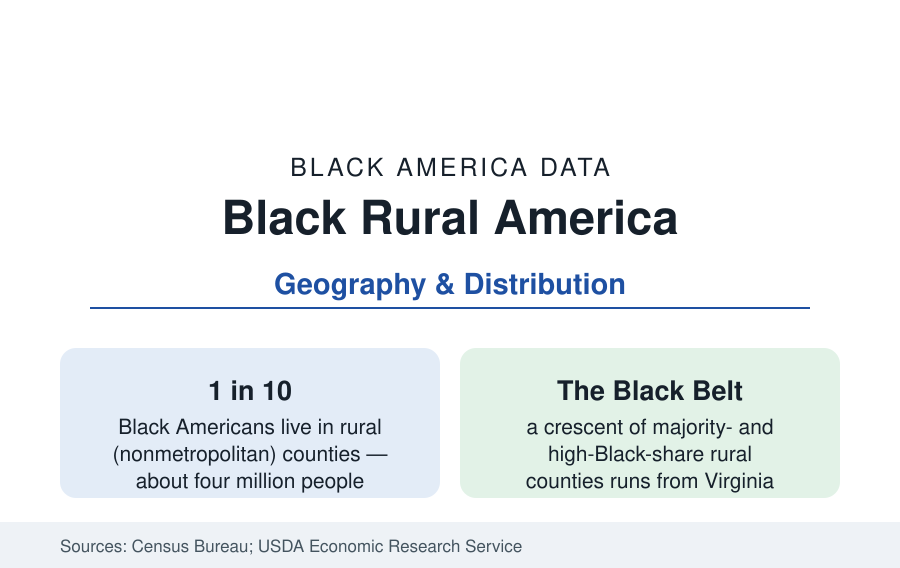

Black Census
Black Rural America: The Black Belt, the Colonias of the Delta, and the Small Towns
About one in ten Black Americans lives in rural America — concentrated in the Black Belt crescent from Virginia to Texas. The census profile.

About one in ten Black Americans — roughly four million people — lives in rural America, in the nonmetropolitan counties outside the metro system. Their geography is the oldest in this reference: the crescent of high-Black-share counties demographers call the Black Belt, running from southern Virginia through the Carolinas' coastal plain, Georgia's middle, Alabama's prairie-soil band, the Mississippi Delta and hill country, Louisiana, and into East Texas — the plantation geography, named for its soil, whose counties hold the deepest Black roots and the section's hardest indicator tables.
The Black Belt's Demography
Several hundred rural counties record Black shares above a fifth, and more than a hundred remain majority-Black — the only majority-Black county geography of scale in the nation — concentrated in the Delta (Mississippi's river counties), Alabama's Black Belt proper (Wilcox, Lowndes, Greene, and their neighbors), Georgia's southwest, South Carolina's I-95 corridor counties, and Louisiana's river parishes. The demographic profile is distinctive on every axis the census measures: older (the youth out-migration of three generations), poorer (the persistent-poverty county list — counties poor in every census since 1960 — is disproportionately this crescent), lower in measured educational attainment, and rooted: Black land and home ownership rates in the deep-rural counties run high in the ACS despite the incomes, the paid-off and heirs'-property landscape of families on land held for a century. The population trend is slow decline in most of the crescent — the estimates' rural Southern counties lose a fraction of a percent a year — punctuated by the micropolitan anchors (Albany, Columbus's orbit, the Delta's Greenville and Greenwood) in the state profiles.
Heirs' Property and the Land File
Rural Black land is the census's geography joined to the law's: the heirs'-property system — land passed without wills across generations until dozens of descendants hold undivided shares — covers a large fraction of Black-owned rural land in the research estimates (the Federation of Southern Cooperatives' and scholars' figures put Black-owned land at roughly five to six million acres today, down from the 1910 peak of some 15 million, with heirs' property the modal tenure in the Deep South). The consequences run through the data: clouded title blocks mortgages, farm credit, disaster aid, and USDA programs (the documentation requirements historically filtered heirs'-property owners out), and partition sales — one heir's share bought by an outsider who forces sale of the whole — are the land-loss mechanism the Uniform Partition of Heirs Property Act (now enacted across much of the South) was written to stop. The 2018 farm bill's heirs'-property provisions and the USDA's relending program are the file's current federal layer.
The Rural Indicator Tables
The public health and economy files converge in the rural counties at their extremes. The Black Belt records the nation's most severe rural health data — the stroke belt's core, the diabetes and hypertension peaks of the health section's maps, hospital closures (the rural closure wave has hit the crescent's counties hardest, leaving maternity and emergency deserts the state profiles note), and life-expectancy figures at the bottom of the national distribution. The economy is farm-and-factory: catfish and poultry processing, timber, the remaining farm economy (the farmers profile), dollar-store retail, the public sector of county schools and government as the professional layer, and out-commuting to the micropolitan anchors. Broadband access — the current era's infrastructure file — lags in the same counties in the FCC data, compounding telehealth, education, and remote-work access in the places the other files already flag.
The Counter-Currents
The decline line is not the whole data. The Return Migration's rural stream — retirees returning to family land, remote workers in the pandemic-era estimates — registers in specific counties' gains; the land-retention and cooperative movements (the Federation of Southern Cooperatives' half-century of work, the Black farming revival of the farmers profile) build on the rooted base; heritage and civil-rights tourism (the Freedom Riders, Selma-to-Montgomery, and Delta blues corridors) monetize the crescent's history at growing scale; and the micropolitan Black communities — Albany, Georgia; Pine Bluff; the Delta towns — hold institutional layers (Albany State, UAPB, Mississippi Valley State — the rural HBCUs) that anchor their counties' professional classes. The crescent's political weight, finally, is structural: its counties are the base electorates of the Black South's state politics, their turnout the margin in the region's statewide arithmetic.
Reading the Rural Data
Rural Black America is the reference's foundation layer — the place most Black families' American stories begin, the land file's ground, and the indicator tables' floor. One in ten Black Americans still lives there, on the oldest geography in this section, and the data insist the crescent is neither a museum nor a remainder: it is a living region whose problems are America's rural problems at their most concentrated, and whose rootedness is unmatched anywhere in the tables.
More in Black Census
The Black Population of the United States: Size, Definitions, and Distribution
The Black population of the United States totals 52.8 million — 15.4 percent of the nation. How the Census Bureau defines and counts the population, and where it lives.
Black Median Household Income in the United States
Black median household income stands at $56,490 in the Census Bureau's annual income report — how the figure is measured, how it compares, and what drives it.
The Black Poverty Rate: Levels, Children, and the Long Trend
The official Black poverty rate is 17.1 percent — against 11.1 percent nationally and 7.7 percent for non-Hispanic White Americans. How poverty is measured and what the data show.
Source: U.S. Census Bureau, Decennial Census and American Community Survey; USDA Economic Research Service rural data; Federation of Southern Cooperatives research.